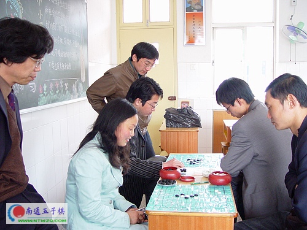
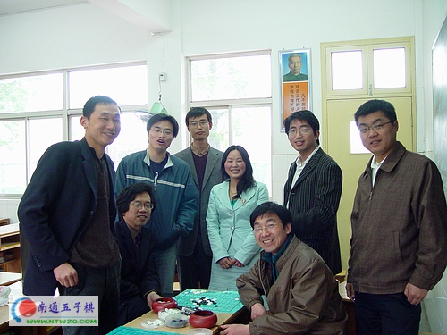

！
！南通市五子棋第四次活动今日圆满结束，此次活动在预备时间紧的情况下共有9位核心成员参加。
此次活动放在南通市港闸区实验小学进行，上午10：30分成员陆续到来，最远的飞翔从张家港横穿长江来参加活动。
上午简单交流之后，大家头脑中都带着残局共进了午餐，下午的交流更加热烈，讨论的氛围非常浓郁。活动到下午4点结束，飞翔路程最远，提前10分钟离场。
此次活动中，温柔一刀、止水、宝儿、小丫、春风等因为另有安排未能前来，主动要求记录旷课一次，下次主动要求受罚。


南通五子棋历次活动：
第一次活动报道：ShowPost.asp?ThreadID=13
第二次活动报道：http://www.ntwzq.com/ShowPost.asp?ThreadID=208
第三次活动报道：ShowPost.asp?ThreadID=331

老大你好美！
［ 有志青年 于 2008-11-11 12:15:26 时奖励此帖[金币加 20 威望加1］